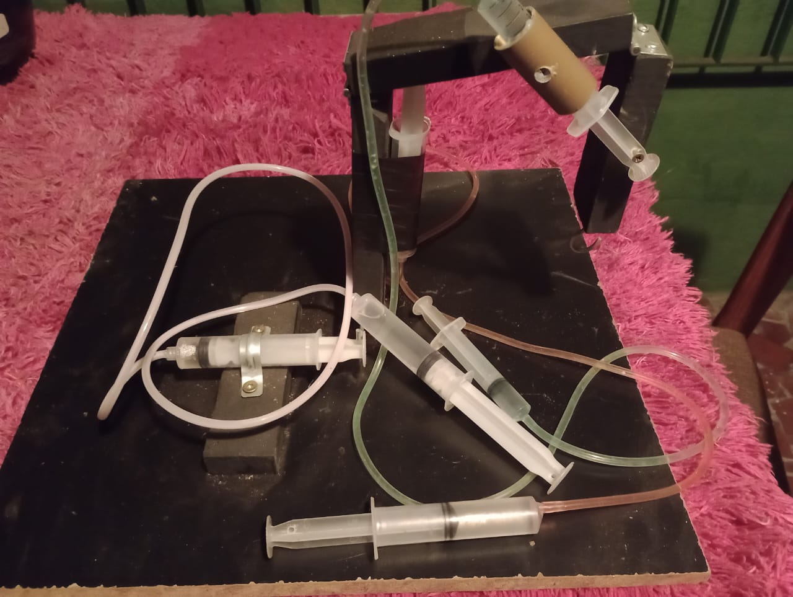
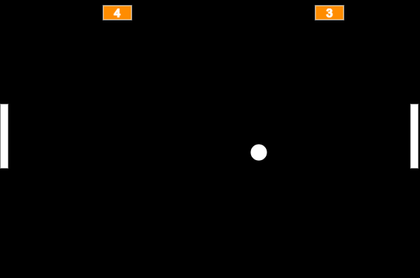

Meus projetos

Minha Maquete: A Força Hidráulica
Este projeto é sobre um guindaste usando a força hidráulica para mover as seringas, e assim poder se movimentar conforme comandamos.

O Jogo de Pong
Este projeto é um jogo de pong feito inteiramente utilizando o p5.js e scratch, onde podemos passar bons minutos nos divertindo com os outros enquanto marcamos os pontos, para ver quem é o melhor.

Passos da Arte
Este projeto cria uma página onde podemos ter inspiração para seguir na carreira artistica, com vídeos que explicam passo a passo certas áreas da arte, e como podemos melhorar nosso entendimento nela.